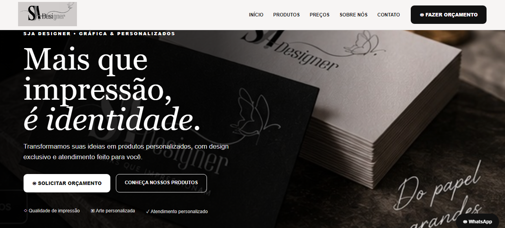

DESIGN
Identidade & Conteúdo Visual
Artes, campanhas, marcas e materiais digitais.
DESIGN • TECNOLOGIA • SOLUÇÕES DIGITAIS
Transformando ideias em projetos reais.
Do design ao código, eu faço acontecer.
Prazer, sou
Sou um profissional multidisciplinar apaixonado por tecnologia, design e criação de soluções digitais. Gosto de transformar uma ideia que ainda está no papel em algo real, funcional e com identidade própria.
Atuo com desenvolvimento de sites, design gráfico, programação, inteligência artificial, automações, bots, marketing digital e edição, sempre buscando aprender novas ferramentas e encontrar a melhor solução para cada projeto.
Na programação, já desenvolvi projetos utilizando tecnologias como Python, Java, SQL e PostgreSQL, além de trabalhar com APIs, integrações e aplicações baseadas em IA. Um dos meus projetos foi a criação de um agente de inteligência artificial integrado ao Telegram, com memória de conversas, banco de dados e funcionamento contínuo em nuvem.
Também trabalho com o lado criativo: identidades visuais, logos, materiais de divulgação, conteúdo para redes sociais, cardápios, peças comerciais e criação de sites completos.
Design para comunicar. Código para construir. IA para solucionar.
Meu objetivo é simples: entender uma ideia, encontrar uma solução e transformá-la em algo que realmente funcione.
Uma seleção dos projetos que representam minhas principais áreas de atuação.
Artes, campanhas, marcas e materiais digitais.
Experiências digitais organizadas, responsivas e focadas em conversão.
Automações, bots, integrações e projetos de programação.
Sites desenvolvidos com foco em identidade visual, organização, experiência e apresentação profissional.

Site desenvolvido para uma gráfica e personalizados, apresentando produtos, preços, informações da empresa e contato para orçamento.
Os próximos sites desenvolvidos serão adicionados aqui.
Alguns dos trabalhos visuais que já desenvolvi, reunindo criação de marcas, identidade visual e materiais de divulgação.
Variação de marca desenvolvida para estúdio de fotografia.
Segunda proposta de cor e aplicação da identidade visual.
Criação visual com estética ilustrada e destaque em azul.
Cardápio completo com organização de produtos, preços e contato para delivery.
Marca com ilustração personalizada para negócio de impressão 3D.
Peça institucional criada para uma empresa de IA, com identidade tecnológica e comunicação de soluções digitais.
Selecione um serviço e fale comigo diretamente no WhatsApp. A mensagem já vai preparada com o serviço escolhido para facilitar seu orçamento.
Artes para redes sociais, materiais de divulgação, cardápios, flyers e peças digitais.
Solicitar orçamento ↗Criação de logotipo, identidade da marca, variações visuais e aplicações.
Solicitar orçamento ↗Sites institucionais, portfólios, páginas profissionais e landing pages responsivas.
Solicitar orçamento ↗Soluções digitais personalizadas, integrações, APIs e projetos de programação.
Solicitar orçamento ↗Agentes de IA, bots, automações e fluxos inteligentes para diferentes necessidades.
Solicitar orçamento ↗Materiais de campanha, presença digital e soluções para comunicação nas redes.
Solicitar orçamento ↗Tratamento, ajustes, composição visual e edição de imagens para uso pessoal ou comercial.
Solicitar orçamento ↗Edição de conteúdo para redes sociais, divulgação, apresentações e projetos digitais.
Solicitar orçamento ↗Me conte sua ideia. Posso analisar o projeto e verificar a melhor forma de desenvolver uma solução personalizada.
Explicar meu projeto ↗Conte o que você precisa e vamos conversar sobre a melhor solução para o seu projeto.